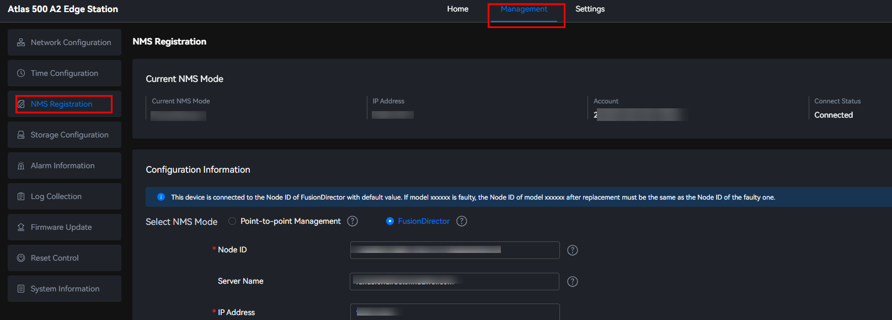

Scenarios
- Point-to-point Management
This mode is used to manage an Atlas 500 A2 edge station independently. By default, this mode is used. To manage edge devices in batches, switch the NMS mode to FusionDirector so that the edge devices can be managed by FusionDirector.
- FusionDirector
FusionDirector is used to centrally manage and maintain servers and Huawei edge devices. It provides full-lifecycle management capabilities, such as edge device management, device configuration, and firmware update, helping O&M personnel improve O&M efficiency and reduce O&M costs. For details about FusionDirector, see the FusionDirector Operation Guide.
You can switch the NMS mode to FusionDirector so that FusionDirector can manage Atlas 500 A2 edge stations in batches.
This mode can be used if FusionDirector is deployed.
Procedure
- Choose Management > NMS Registration.Figure 1 NMS registration
 - In the Configuration Information area, select the NMS mode.
- Point-to-point Management: By default, the Atlas IES independently manages an Atlas 500 A2 edge station in this mode. You can enter the management IP address of the Atlas 500 A2 edge station on your browser to perform point-to-point management.
- FusionDirector: Connect the Atlas 500 A2 edge station to the central management system FusionDirector for unified management. Set the parameters based on the actual situation.Figure 2 FusionDirector


- If multiple IP addresses are configured on the same NIC, a random IP address is displayed on FusionDirector. As a result, the device cannot be identified. You can specify the IP address to be managed by FusionDirector by binding the IP address to an egress route. For example, if the IP address of FusionDirector is 192.168.100.15 and the NIC on the device has two IP addresses 192.168.1.100 and 192.168.1.101, you can run the ip route add 192.168.100.15 via 192.168.1.1 src 192.168.1.100 command to enable FusionDirector to manage 192.168.1.100.
- When FusionDirector is ready, the FusionDirector root certificate cannot be uploaded on the WebUI. You need to import other FusionDirector root certificates to implement NMS switchover between FusionDirectors.
Table 1 Description Parameter
Mandatory/Optional
Description
Node ID
Mandatory (automatically identified)
ID of the device connected to FusionDirector. Retain the default value.
The value of this parameter must be a character string in UUID format. A UUID is a 128-bit identifier and is usually used to identify an entity on a network.
A UUID string consists of digits and lowercase letters (a to f) in the following format: a string of eight digits and letters (32 bits) - a string of four digits and letters (16 bits) - a string of four digits and letters (16 bits) - a string of four digits and letters (16 bits) - a string of 12 digits and letters (48 bits)
Example: 1aab2222-abc3-de45-123d-56789abcfdff
NOTE:If an Atlas 500 A2 edge station is faulty, use a new Atlas 500 A2 edge station with the same node ID. Choose on the FusionDirector WebUI to query the node ID information of the faulty device.
Server Name
Optional
If you import a user-defined service certificate to FusionDirector, you need to import the root certificate of the corresponding CA to the edge device to verify the user-defined service certificate of FusionDirector. You can import the root certificate by clicking FusionDirector Root Certificate File on the WebUI. In addition, you need to set the Server Name parameter to verify the domain name of the user-defined service certificate of FusionDirector. The value must be the same as the CN field of the user-defined service certificate of FusionDirector. (CN refers to Common Name.)
If you use the initial service certificate of Huawei, you do not need to set this parameter.
NOTICE:The CN field of the user-defined service certificate cannot contain "huawei". Otherwise, the device fails to interconnect with FusionDirector.
If the server name is a domain name starting with "*.", after the configuration is saved, "*." will be replaced with "fd.".
IP Address
Mandatory
IP address for accessing FusionDirector. The value is an IPv4 address.
Port
Mandatory
Port for accessing FusionDirector. The value range is [1, 65535]. Currently, only 443 is supported.
Account
Mandatory
Account for accessing FusionDirector. The default value is EdgeAccount.
NOTE:After the interconnection is successful, the interconnection account automatically uses the new one-device-one-secret authentication mode delivered by FusionDirector for interconnection again. The one-device-one-secret account and password are automatically generated by the FusionDirector microservice. For details, see the FusionDirector Maintenance Guide.
Password
Mandatory
Password for accessing FusionDirector.- If the version of FusionDirector is 1.7 or later, obtain the password by referring to "Configuration Quick Start > Edge Device > Adding an Edge Device" in the FusionDirector Operation Guide.
- If the FusionDirector version is earlier than 1.7, obtain the password by referring to "Configuration Quick Start > Edge Device > Registering FusionDirector NMS Information" in the FusionDirector Operation Guide.
FusionDirector Root Certificate File
Optional
The root certificate file must be uploaded when FusionDirector is interconnected for the first time. Click
 to upload the root certificate file. If there are multiple levels of certificates, merge all the certificates into one file and import it. You are advised to place the upper-level certificates after the lower-level certificates in the file.This parameter is optional. You do not need to set this parameter when using the initial certificate. For security purposes, you are advised to use your own certificates and public and private key pairs and periodically update them to ensure certificate validity and security. If the device fails to connect to FusionDirector because the certificate has expired or is revoked, import the root certificate file again. For security purposes, the root certificate must meet the following requirements on signature algorithms and key lengths:
to upload the root certificate file. If there are multiple levels of certificates, merge all the certificates into one file and import it. You are advised to place the upper-level certificates after the lower-level certificates in the file.This parameter is optional. You do not need to set this parameter when using the initial certificate. For security purposes, you are advised to use your own certificates and public and private key pairs and periodically update them to ensure certificate validity and security. If the device fails to connect to FusionDirector because the certificate has expired or is revoked, import the root certificate file again. For security purposes, the root certificate must meet the following requirements on signature algorithms and key lengths:- Use RSA with a key of 3072 bits or more if an asymmetrical encryption algorithm is used.
- Use SHA2 with a key of 256 bits or more if a hash algorithm is used.
You are advised to upload the custom root certificate. In addition, Huawei provides a root certificate on its official website. To obtain it, perform the following steps:
Log in to FusionDirector, choose Menu > System Management > Security Management > Certificates, click Service Certificates, click Export on the right of FusionDirectorServer to download the certificate package rootCerts.zip to the local PC. Decompress the downloaded certificate package to obtain the rootCertChain.crt certificate.
NOTE:If the device is in the managed state, the certificate cannot be uploaded again.
FusionDirector CRL
Optional
For security purposes, you are advised to import a CRL after uploading the FusionDirector root certificate to check whether the FusionDirector certificate is revoked. If the FusionDirector certificate has been revoked, the device cannot interconnect with FusionDirector. The certificate is provided by the user.
FusionDirector Interconnection Test
Mandatory
The interconnection test is performed by default.
- If you select Test, the node ID and the connectivity between the device and FusionDirector are tested. If the test fails, the NMS mode switchover fails.
- If you select Not Test, the node ID and the connectivity between the device and FusionDirector will not be tested. The NMS mode switchover is successful, but FusionDirector management may fail.
In the offline centralized configuration where FusionDirector cannot be connected, you can skip the interconnection test. However, the FusionDirector parameters must be valid. That is, the node ID of each Atlas 500 A2 edge station must be unique on FusionDirector, and the IP address, user name, and password are valid. The interconnection test is recommended in other scenarios to prevent management failures caused by incorrect inputs.
- Click Save.
If the message indicating that NMS mode switches successfully is displayed, the NMS registration is configured successfully.